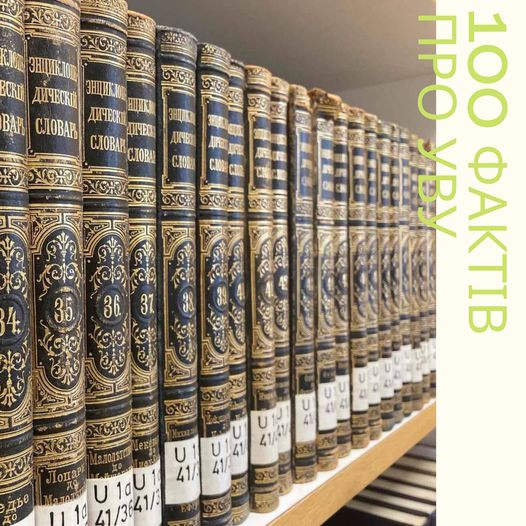

Найдавніші книги в Бібліотеці УВУ родом з ХVIIІ cтоліття.
читати даліУВУ- єдиний університет по за межами України з українською,німецькою та англійською мовами викладання,з правом присвоєння вчених ступенів магістра та доктора наук
УВУ-Диплом бакалавра, спеціаліста або магістра в одному із акредитованих навчальних закладів і вільне володіння українською мовою – головні передумови вступу в УВУ
Навчання в Мюнхене
Центр українською культури в Німеччині
Міжнародні професори
Унікальні архівні матеріали
Український вільний університет започатковує нову магістерську програму «Мистецтвознавство.» Запрошуємо до навчання усіх хто цікавиться порівняльним і прикладним мистецтвознавством та менеджментом в сфері культури.
В рамках відзначення свого столітнього ювілею Український Вільний Університет проводить конкурс, переможці якого зможуть долучитися до академічної громади УВУ і безкоштовно навчатися в унікальному виші.
Вчора відбувся четвертий із циклу вебінар психологині Лариси Дідковської. Цього разу мова йшла про енергію сексуальности як ресурсу життя. Ця доволі незручна тема, яка в українському суспільстві нележить до напівтабуйованих та не прийнятних для публічних розмов, щиро зацікавила учасників, яких зібралося понад сотню.
Украї́нський ві́льний університе́т (УВУ) (нім. Ukrainische Freie Universität; UFU) — приватний український університет, розташований у Мюнхені, Баварія, Німеччина. Перший вищий навчальний заклад і друга наукова установа української еміграції за кордоном[1]. Є не тільки одним із найстаріших приватних навчальних закладів Німеччини, але і єдиним у світі вищим навчальним закладом поза межами України з українською мовою навчання.
Читати далі
Життя студентів в УВУ відмінне від будь-якого іншого. Свобода та відповідальність - це те, що забезпечує різноманіття форм студентської активності, сприяє студентській самоорганізації, вчить рухатись від генерації ідеї до її втілення, здобуваючи в процесі багато корисних практичних знань та навичок.

Конференції, виставки, зустрічі («організовані» заходи), й так звані незапрограмовані («несподівані» події). lorem400

Фонди бібліотеки налічують понад 30 тисяч книжок і періодичних видань. У 1991 році комісія Міністерства внутрішніх справ Німеччини визнала бібліотеку УВУ найважливішим джерелом україністики в німецькомовному світі.

Професорська колегія складалася з визначних учених які користуються авторитетом і визнанням у науково-освітньому просторі України, а також працюють візитінг-професорами в закордонних університетах.
0
годин викладання
1
Ректорів
0
Випусників
0
Докторів права
0
Професорів-викладачів

0
Заходів
0
Конференцій
0
Книг
0
Кандидатів наук
0
Докторів філософії
0
Конференцій
0
арх.документів
В архіві УВУ зберігаються документи, що засвідчують матеріяльну підтримку українців у Німеччині голодним в Україні 32-33гг
читати далі22 травня 1947 р. американський військовий уряд Баварії дозволив УВУ видавати дипломи і визнав його вчені ступені.
читати далі